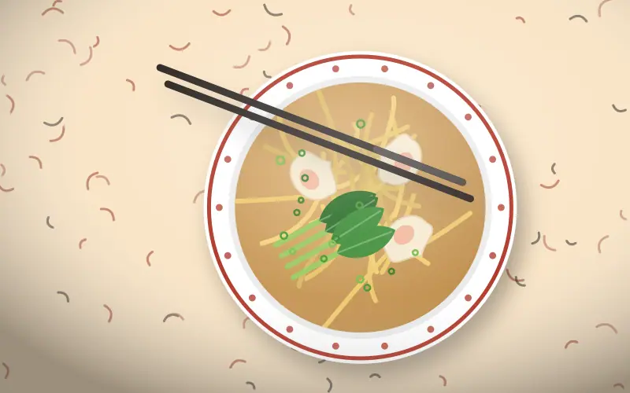

麵 · Noodles16%OFF
Tsim Sha Tsui · Yau Tsim Mong
Chee Kei (Tsim Sha Tsui)
池記（尖沙咀）
Beef brisket wonton noodles牛腩雲吞麵
$72$86Save HK$14
52/100
HK Cheap Eats Value Score · Average valueEstimated from the editors’ rating, price vs similar noodles places and MTR access. Portion size and customer reviews aren’t scored yet. How it’s calculated
- Hours
- 11:00 – 23:00
- Best for
- Dinner
- Nearest MTR
- Tsim Sha Tsui 尖沙咀 · 3 min walk
- Pay with
- Octopus · Card · FPS / PayMe
- Cuisine
- Noodles 粉麵
- Area
- Tsim Sha Tsui 尖沙咀 · Yau Tsim Mong 油尖旺區
- Status
- Unverified
- Source
- HK Cheap Eats editors
- Listed
- 19 Nov 2026
- Price last checked in store
- Not yet
Picture is an illustration, not a photo of this restaurant. Spotted a wrong price or hours? Suggest a correction in the app.